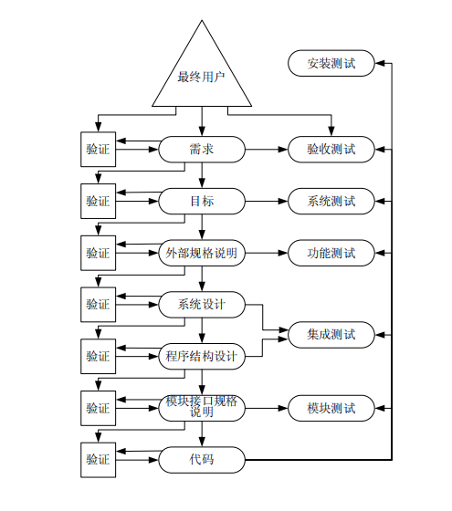

Day6 高级别测试——功能、系统、验收、安装测试
Day6 高级别测试——功能、系统、验收、安装测试...
完成了对程序的模块测试之后，整个测试过程才刚刚开始，对于大型或复杂的软件 …
Day6 高级别测试——功能、系统、验收、安装测试...
完成了对程序的模块测试之后，整个测试过程才刚刚开始，对于大型或复杂的软件来说尤为如此。考虑下面这个重要概念：
当程序无法实现其最终用户要求的合理功能时，就发生了一个软件错误。
根据这个定义，即使完成了一次非常完美的模块测试，仍然不能保证已经找出了程序中的所有错误。
因此，要结束整个测试任务，还必须进行其他形式的更深入的测试。我们将这些新形式的测试称为“更高级别的”测试。软件开发过程在很大程度上是沟通有关最终程序的信息、并将信息从一种形式转换到另一种形式。由于这个原因，绝大部分软件错误都可以归因为信息沟通和转换时发生的故障、差错和干扰。
软件产品开发周期的模型
一个软件产品开发周期的模型过程的流程可归结为以下7 个步骤：
-
将软件最终用户的要求转换为一系列书面的需求。这些需求就是该软件产品要实现的目标。
-
通过评估可行性与成本、消除相抵触的用户需求、建立优先级和平衡关系，将用户需求转换为具体的目标。
-
将上述目标转换为一个准确的产品规格说明，将产品视为一个黑盒，仅考虑其接口以及与最终用户的交互。该规格说明被称为“外部规格说明”。
-
如果该产品是一个系统，如操作系统、飞行控制系统、数据库管理系统或雇员人事系统等，而不仅是一个程序（编译器、工资程序、字处理程序等），那么下一步骤就是系统设计。该步骤将系统分割为单独的程序、部件或子系统，并定义它们的接口。
-
通过定义每个模块的功能、模块的层次结构以及模块间的接口，来设计程序或程序集合的结构。
-
设计一份准确的规格说明，定义每个模块的接口与功能。
-
经过一个或更多的子步骤，将模块接口规格说明转换为每个模块的源代码算法。
以下是从其他角度来审视上述文档的形式：
-
需求规格说明定义了为什么要开发程序。
-
目标定义了程序要做什么，以及应做得怎样。
-
外部规格说明定义了程序对用户的准确表现。
-
与后续阶段相关的文档越来越详细地规定了程序是如何建立起来的。
假定软件开发周期的七个阶段包括了信息的沟通、理解和转换，以及大多数的软件错误都来源于信息处理中的故障，那么现在有三个补充的方法来预防或识别这些错误。
首先，我们可以使软件开发过程更加精密，以防其中出现很多错误；其次，在每个阶段结束时可以引入一个独立的验证过程，在进入下一个阶段之前尽可能多地发现问题。

功能测试(Function Testing)
功能测试是一个试图发现程序与其外部规格说明之间存在不一致的过程。外部规格说明是一份从最终用户的角度对程序行为的精确描述。除了在小程序中的使用情况之外，功能测试通常是一项黑盒操作。也就是说，要依赖早期的模块测试的过程来实现理想的白盒逻辑覆盖准则。在进行功能测试时，需要对规格说明进行分析以获取测试用例集。
所讨论的等价类划分方法、边界值分析方法、因果图分析方法和错误猜测方法尤其适合于功能测试。
应始终牢记功能测试的目的是为了暴露程序的错误以及与规格说明不一致之处，而不是为了证明程序符合其外部规格说明。
系统测试(System Testing)
系统测试最容易被错误理解，也是最困难的测试过程。系统测试并非是测试整个系统或程序功能的过程，因为有了功能测试，这样会显得多余。
系统测试有着特定的目的：将系统或程序与其初始目标进行比较。
给定这个目标之后，隐含两方面的含义：
-
系统测试并不局限于系统。如果产品是一个程序，那么系统测试就是一个试图说明程序作为一个整体是如何不满足其目标的过程。
-
根据定义，如果产品没有一组书面的、可度量的目标，系统测试也就无法进行。
在寻找程序与其目标之间的不一致的过程中，应重点注意那些在设计外部规格说明的过程中所犯的转换错误。系统测试因而成为一种关键的测试类型，因为就软件产品本身、所犯错误的数量及其严重性而言，开发周期的这个阶段是最易出错的。这也暗示与功能测试的情况不同，外部规格说明不能作为获得系统测试用例的基础，否则就破坏了系统测试的目标。然而另一方面，也不能利用目标文档本身来表示测试用例，因为根据定义，这些文档并不包含对程序外部接口的准确描述。克服这一两难局面的方法是利用程序的用户文档或书面材料。通过分析目标文档来设计系统测试，分析用户文档来阐明测试用例。该方法能够产生两方面的作用，一是将程序与其目标和用户文档相比较，二是同时也将用户文档与程序目标相比较.
能力测试(Facility Testing)
最明显的系统测试类型是判断目标文档提及的每一项能力（或功能，为了避免与功能测试发生混淆而不使用“功能”一词）是否都确实已经实现。能力测试的过程是逐条语句地检查目标文档，当某条语句定义了一个“要做什么”（例如，“语法应该一致……”、“用户应当可以指定一个空间范围……”等），就判断程序是否满足。此种类型的测试常常可以在不使用计算机的情况下进行；有时人工对目标和用户文档进行比较就足够了。尽管如此，利用问题检查单将有助于在下一次进行测试时，确保人工检查的目标是相同的。
6.2.2 容量测试(Volume Testing)
第二类系统测试是使程序经受大容量数据的检验。举例来说，编译器可能要编
译规模非常庞大的源程序，连接编辑器可能需要处理一个包含上千模块的程序，电
子电路模拟器可能要输入一个包含上千部件的电路，而操作系统的作业队列可能已
经达到饱和的容量。如果程序需要处理跨越不同卷的文件，则应产生足够的数据使
程序从一个卷转换到另一个中。换言之，容量测试的目的是为了证明程序不能处理
目标文档中规定的数据容量。
由于容量测试显然需要大量的资源，鉴于对机器和工时的考虑，不可进行过多
的容量测试。当然，每个程序应该至少进行几次容量测试。
6.2.3 强度测试(Stress Testing)
强度测试使程序承受高负载或强度的检验。这不应和容量测试发生混淆；所谓
高强度是指在很短的时间间隔内达到的数据或操作的数量峰值。类似的情况是测试
一名打字员。容量测试是判断打字员能否处理大篇幅的稿子，而强度测试则是判断
打字员能否达到每分钟 50 个单词的速度。
由于强度测试涉及时间因素，因此，它不适用于很多程序，如编译器或批处理
工资程序。然而，强度测试适用于在可变负载下运行的程序，以及交互式程序、实
时程序和过程控制程序。假如某个空中交通控制系统要求在其区域内最多可跟踪
200 架飞机，则可以通过模拟 200 架飞机存在的情况来对其进行强度测试。由于在
客观上无法避免第 201 架飞机进入该区域，因此需要进一步的强度测试，以考察系
统对这个不速之客的反应。附加的强度测试则会模拟大量飞机同时进入该区域的情
况。
如果操作系统要求支持最多 15 个多道程序的作业，则可尝试同时运行 15 个作
业对其进行强度测试。可以让学员强行打左舵、后拉节流阀、放下襟翼、抬起机头、
放下起落架、打开着陆灯并向左转弯等所有这些操作同时进行，观察系统如何反应，
从而对飞行员训练模拟器进行强度测试（这个测试用例可能需要一个长着四只手的
飞行员，或者现实一点，需要飞行座舱里有两个测试专家）。可以通过让所有被监
视的过程同时产生信号，来对过程控制系统进行强度测试。当对电话交换系统进行
强度测试时，可以让大量电话同时打入该系统。
基于 web 的应用程序是最常按受强度测试的软件之一。在这里，我们需要确信
的是应用程序及硬件能够处理一定容量的并发用户。读者可能会争辩说，也许有数
百万人在同一时刻访问站点，但这是不现实的。我们需要弄清用户群，然后设计一
个强度测试，体现出可能访问站点的最大人群的情况。本书第 9 章将提供关于测试
基于 Web 应用程序的更多信息。
虽然有很多强度测试体现的是程序在运行过程中可能会遇到的情况，然而也有
另一些强度测试确实体现了“不可能发生”的情况，但这并不意味这些测试是无用
的。如果在这些不可能发生的情况中检查出了错误，那么这项测试就是有价值的，
因为同样的错误也可能发生在现实的、强度稍低的环境中。
6.2.4 易用性测试(Usability Testing)
系统测试的另一个重要类型是试图发现人为因素或易用性的问题。当本书的第
一版出版时，计算机行业并不太注意研究和定义编程系统中良好的人为因素问题。
今天的软件系统，尤其是那些为广大商业市场而设计的软件，通常都进行了广泛的
人为因素的研究，而现在的软件自然也受益于过去的成千上万的程序和系统。然而，
对人为因素的分析依然是一项极为主观的事情。在以下的清单中，我们列举了需要
测试的一些问题：
\1. 每个用户界面是否都根据最终用户的智力、教育背景和环境要求而进行了
调整？
\2. 程序的输出是否有意义、不模糊且没有计算机的杂乱信息？
\3. 错误诊断（如错误信息）是否直接，用户是否需要有计算机学科的博士学
位才能理解它门？举例来说，程序是否产生了诸如“IEK022A OPEN
ERROR ON FILE ' SYSIN ' ABEND CODE = 102 ?”此类的信息？象这样的
信息在二十世纪七、八十年代的软件系统中并不鲜见。今天的面向大众销
售的系统在这方面有了改进，但我们仍然会遇到诸如“出现一个未知错误”
或“程序遇到了一个错误，必须重新启动”这样无用的信息。自己编写的
程序是由自己控制的，不应加入这些无用的信息。即使我们并不开发软件，
如果在测试小组中工作，那么可以推动人机界面这个领域的改进。
\4. 整体的用户界面是否在语法、惯例、语义、格式、风格和缩写方面展现出
了相当程度的概念完整性，基本的一致性和统一性？
\5. 在准确性极为重要的环境里，如网上银行系统，输入中是否有足够的冗余
信息？举例来说，该系统可能会要求输入账号、用户名和 PIN（个人识别
号）来验证访问账户信息的是合法用户。
\6. 系统是否包含过多或不太可能用到的选项？现代软件的一个趋势是，仅向
用户提供那些基于软件测试和设计考虑而确定出的最有可能使用的菜单选
项。一个设计良好的软件可以向用户学习，并开始向不同的用户展示其经
常访问的菜单项。即使已经有了这样智能化的菜单系统，仍需要设计成功
的软件，使得对不同选项的访问合乎逻辑、符合直觉。
\7. 对于所有的输入，系统是否返回了某些类型的即时确认信息？举例来说，
在点击鼠标进行输入的环境里，被选项可以变换颜色，或者某个按钮对象
可以显示凹进或凸起的状态。如果要让用户从列表中选择，那么当用户做
出选择后被选序号应显示在屏幕上。还有，如果被选的操作需要一些运行
时间（如果软件正在访问一个远程的系统，情况常会如此），那么应显示一
条信息通知用户当前正在做什么。
\8. 程序是否易于使用？举例来说，如果输入是区分大小字符的，这一点对用
户来说是否清楚？此外，如果程序要求浏览一系列的菜单或操作，那么返
回到主菜单的方法是否清楚？用户是否可以很容易浏览到上一层或下一
层？
6.2.5 安全性测试(Security Testing)
由于社会对个人隐私的日益关注，许多软件都有特别的安全性目标。安全性测
试是设计测试用例来突破程序安全检查的过程。举例来说，我们可以设计测试用例
来规避操作系统的内存保护机制，破坏数据库管理系统的数据安全机制。设计此种
测试用例的方法之一是研究类似系统中已知的安全问题，然后生成测试用例，尽量
暴露被测系统存在相似问题。例如，在杂志，聊天室和新闻组中发布的资料，经常
包含有操作系统或其他软件系统的已知错误。通过在与被测软件提供相似服务的现
有系统中搜寻安全漏洞，可以设计测试用例来判断软件是否受到类似问题的困扰。
基于 web 的应用程序常常比绝大多数程序所需的安全测试级别更高。对于电子商务
网站尤其如此。尽管已经有了足够多的技术（例如密码学）允许客户在因特网上安
全地完成交易，但不能单纯依赖技术的应用来确保安全。除此之外，我们必须向客
户群证明软件是安全的，否则就会有失去客户的风险。另外，本书第 9 章提供了更
多的有关基于因特网的应用程序的安全性测试的资料。
6.2.6 性能测试(Performance Testing)
很多软件都有特定的性能或效率目标，这终特性描述为在特定负载和配置环境
下程序的响应时间和吞吐率。再一次强调，由于系统测试的目的是为了证明程序不
能实现其目标，因此应设计测试用例来说明程序不能满足其性能目标。
6.2.7 存储测试(Storage Testing)
类似地，软件偶尔会有存储目标，举例来说，可能描述了程序使用的内存和辅
存的容量，以及临时文件或溢出文件的大小。应设计测试用例来证明这些存储目标
没有得到满足。
6.2.8 配置测试(Configuration Testing)
诸如操作系统，数据库管理系统和信息交换系统等软件都支持多种硬件配置，
包括不同类型和数量的 I/O 设备和通信线路，或不同的存储容量。通常可能的配置
数量非常之大，以至于测试无法面面俱到，但是至少应该使用每一种类型的设备，
以最大和最小的配置来测试程序。如果软件本身的配置可忽略掉某些程序组件，或
可运行在不同的计算机上，那么该软件所有可能的配置都应测试到。
如今的很多软件都设计成可运行在多种操作系统下，因此如果测试此类程序，
应该在该程序面向的所有操作系统环境中对其进行测试。对设计在 Web 浏览器里运
行的程序，需要特别的注意，因为 Web 浏览器的种类繁多，并不是所有浏览器都按
同样方式运行。除此之外，即使是同一种 Web 浏览器，在不同的操作系统之下，运
行方式也会不同。
6.2.9 兼容性/配置/转换测试(Compatibility/Configuration/Conversion Testing)
大多数开发的软件都并不是全新的，常常是为了替换某些不完善的系统。这样
的软件往往有着特定的自标，涉及与现有系统的兼容以及从现有系统的转换过程。
再次强调，在针对这些目标测试程序时、测试用例的目的是证明兼容性目标未被满
足，转换过程并未生效。在将数据从一个系统转移到另一个系统时，应尽力发现错
误。升级数据库管理系统就是一个例子。需要确定现有的数据安置到了新的系统中。
有很多不同的方法测试这个过程；但这些方法都高度依赖于所使用的数据库系统。
6.2.10 安装测试(Installability Testing)
有些类型的软件系统安装过程非常复杂，测试安装过程是系统测试中的一个重
要部分。对于包含在软件包中的自动安装系统而言，这尤其重要。安装程序如果出
现故障，会影响用户对软件的成功体验。用户的第一次体验来自于安装软件的过程。
如果这个过程进行得很槽糕，用户或顾客就要么寻找其他的产品，要么对软件的有
效性不抱太大信心。
6.2.11 可靠性测试(Reliability Testing)
当然，所有类型的测试都是为了提高软件的可靠性，但是如果软件的目标中包
含了对可靠性的特别描述，就必须设计专门的可靠性测试。测试可靠性目标可能很
困难。举例来说，诸如公司广域网（WAN）或因特网服务供应商（ISP）等现代在
线系统在整个运行期间，正常运行时间应占 99.97％。我们现在还不太可能花上数
月甚至数年的时间来测试这个目标。今天的关键软件系统的可靠性标准甚至更高，
而现今的硬件可以令人信服地保障这个目标的实现。但如果软件或系统有更为适中
的平均故障间隔时间（MTBF）目标或合理的（以测试而言）功能错误目标，就有
可能对其进行测试。
例如，MTBF 值不超过 20 个小时，或者系统目标是程序在投入使用之后暴露
的不同错误的数量不得超过 12 个，那么就可以进行测试，特别是使用了统计的、
程序验证的或基于模型的测试方法之后。这些方法都超出了本书的范围，但有些技
术文献（网上或其他方面的）对这个领域提供了充分指导。
举例来说，如果读者对软件测试的这个领域感兴趣，可以研究归纳断言的概念。
这种方法的目的是设计出有关被测软件的一系列定理，作为判断软件中不存在错误
的依据。这种方法首先要对程序的输入条件及其正确结果编写断言。断言用形式逻
辑的符号表示，通常是一阶谓词演算。然后需要确定程序中的每个循环，对于每一
个循环都写一个断言，描述出在循环中任意点都不变的（总为真）条件。程序现在
已经被划分为固定数量的固定长度的路径（在成对的断言中的全部所有路径）。对
于每一条路径，取中间程序语句的语义来修改断言，最终到达路径的终点。此时在
路径的终点处存在着两条断言：原先的断言以及从路径的另一个终点处断言引申出
的断言。然后写出一条定理，说明原先的断言隐含着引申出的断言，并试图证明这
个定理。如果能够证明该定理，就可以认为该程序不存在错误——只要程序最终能
够结束，需要单独的证明来说明程序总会结束。
虽然此种类型的软件证明或预测听起来非常复杂，但可靠性测试及软件可靠性
工程（SRE）的概念已经为我们所认识，并且对于那些必须维持非常高的正常运行
时间的系统，其重要性日益增加。为了说明这一点，请查看表 6-l 中某个系统为支
持不同的正常运行时间的需要而每年必须达到的运行小时数。这些数字能够说明对
SRE 的需求。
表 6-1 不同正常运行时间要求的小时数/年
正常运行时间的比例需求
要求的运行小时/年
100 8760.0
99.9 8751.2
98 8584.8
97 8497.2
96 8409.6
95 8322.0
6.2.12 可恢复性测试(Recovery Testing)
诸如操作系统、数据库管理系统和远程处理系统等软件通常都有可恢复性目
标，说明系统如何从程序错误、硬件失效和数据错误中恢复过来。系统测试的一个
目标是证明这些恢复机制不能够正确发挥作用。我们可以故意将程序错误置入某个
系统中，判断系统是否可以从中恢复。诸如内存校验错误或 I/O 设备错误等硬件错
误也可以进行模拟。而如通信线路中的嗓音或数据库中的无效指针等数据错误可以
故意生成或模拟出来，以分析系统的反应。
这些系统的设计目标之一是使平均恢复时间（MTTR）最小。系统宕机才通常
会减少公司的收入。我们的一个测试目标是证明系统不能满足 MTTR 的服务合同。
MTTR 往往有上界和下界，所以测试用例应反映出这些界限。
6.2.13 适用性测试(Serviceability Testing)
软件还可能有适用性或可维护性的目标。所有的此类目标都必须测试到。这些
目标可能定义了系统提供的服务辅助功能，包括存储转存程序或诊断程序、调试明
显问题的平均时间、维护过程以及内部业务文档的质量等。
6.2.14 文档测试(Documentation Testing)
如同我们在图 6-4 中所描述的那样，系统测试也需要检查用户文档的正确性。
完成此任务的主要方法是根据文档来确定系统测试用例的形式。也就是说，一旦设
计完成某个具体的测试情况，应该使用文档作为编写实际测试用例的指南。同时，
用户文档应成为审查的对象（类似于本书第 3 章中的代码审查的概念），检查其正
确性和清晰性。在文档中描述的任何范例应编成测试用例，并提交给程序。
6.2.15 过程测试(Procedure Testing)
最后，很多软件都是较大系统的组成部分，这些系统并不完全是自动化的，包
含了很多人员操作过程。在系统测试中，必须对所有已规定的人工过程，如系统操
作员、数据库管理员或最终用户的操作过程进行测试。
举例来说，数据库管理员必须记录备份和恢复数据库系统的操作过程。在可能
的情况下，应由与数据库管理不相关的人来测试这些过程。然而，公司必须为充分
测试这些过程而提供所需的资源，这些资源通常包括硬件和额外的软件许可证。
6.2.16 系统测试的执行
系统测试执行中一个最关键的考虑是决定由谁来进行测试。我们从反面来回答
这个问题：（
l）不能由程序员来进行系统测试；（
2）在所有的测试阶段之中，这是
惟一明确不能由负责该程序开发的机构来执行的测试。
第一点基于的事实是，执行系统测试的人思考问题的方式必须与最终用户相
同，这意味着必须充分了解最终用户的态度和应用环境，以及程序的使用方式。那
么显然的是，如果可行的话，一位或多位最终用户是很好的执行测试的候选人。但
是，由于一般的最终用户都不具备执行很多前面所描述的测试类型的能力或专业技
术，因此，理想的系统测试小组应由几位专业的系统测试专家（以执行系统测试作
为职业）、一位或两位最终用户的代表、一位人类工程学工程师以及该程序主要的
分析人或设计者所组成。将原先的设计者包括进来并不违反先前的测试原则，即不
提倡测试由自己编写的程序。因为程序自构思以来已经历经人手，所以原先的设计
者不会再受到心理束缚的影响，对程序的测试不会再触及该原则。
第二点基于的事实是，系统测试是一项“随心所欲，百无禁忌”的活动，而软
件开发机构会受到心理束缚，有悖于此项活动。而且大多数的开发机构最为关心的
是让系统测试进行得尽可能顺利并按时完成，而不会尽力证明程序不能满足其目
标。系统测试至少应由很少（如果有的话）受开发机构左右的独立人群来执行。也
许最经济的执行系统测试的方式（所谓经济，是指花一定的成本发现最多的错误，
或利用更少的费用发现相同数量的错误）是将测试分包给一个独立的公司来完成。
这一点将在本章的后面章节进一步讨论。
6.3 验收测试(Acceptance Testing)
让我们回到图 6-3 所示的开发过程的完整模型上来，可以看到验收测试是将程
序与其最初的需求及最终用户当前的需要进行比较的过程。这是一种不寻常的测试
类型，因为该测试通常是由程序的客户或最终用户来进行，一般不认为是软件开发
机构的职责。对于软件按合同开发的情况，由订购方（用户）来进行验收测试，将
程序的实际操作与原始合同进行对照。如同其他类型的测试一样，验收测试最好的
方法是设计测试用例，尽力证明程序没有满足合同要求。假如这些测试用例都是不
成功的，那么就可以接受该程序。对于软件产品的情况，如计算机制造商的操作系
统或编译器，或是软件公司的数据库管理系统，明智的用户首先会进行一次验收测
试以判断产品是否满足其要求。
6.4 安装测试(Installation Testing)
图 6-3 描述的测试过程的剩余部分是安装测试。安装测试在图 6-3 中的位置有
些不寻常，它与所有其他测试过程不同。与设计过程中的任何阶段都没有联系。它
的不寻常是由于其目的不是为了发现软件中的错误，而是为了发现在安装过程中出
现的错误。
在安装软件系统期间会发生很多事件。作为示例的简短列表包括了下列事件：
\1. 用户必须选择大量的选项。
\2. 必须分配并加载文件和库。
\3. 必须进行有效的硬件配置。
\4. 软件可能要求网络联通，以便与其他软件连接。
安装测试应由生产软件系统的机构来设计，作为软件的一部分来发布，在系统
安装完成之后进行。除此之外，测试用例需要检查以确认已选的选项集合互不冲突，
系统的所有部件全部存在，所有的文件已经创建并包含必需内容，硬件配置妥当等。
6.5 测试的计划与控制
如果认为测试一个大型软件系统可能需要编写、执行和验证数万个测试用例、
处理数千个模块、改正数千个错误、雇佣数百人花费一年甚至更长的时间工作，那
么很明显我们在计划、监视和控制测试过程方面遇到了巨大的项目管理挑战。事实
上，这些问题非常繁杂，我们可以将整本书都用来讨论软件测试的管理问题。本节
的初衷是总结其中的一些问题。
正如第 2 章所提到的，在计划测试过程中最常出现的主要错误是默认为不会发
现软件缺陷。这个错误带来的显然结果是对计划投人的资源（人力、时间表及计算
机时间）明显估计不足，这在计算机行业内是个声名狼藉的问题。造成这个问题的
原因是测试阶段处于开发周期的最后阶段，致使调整资源非常困难。另外，可能是
更重要的问题，即对软件测试的定义有误，因为很难看到对测试正确定义（测试的
目的是发现错误）的人在假定找不到任何错误的情况下去计划一个测试。
与大多数项目的情况一样，计划是管理测试过程中至关重要的一环。一个良好
的测试计划应包括：
\1. 目标。必须定义每个测试阶段的目标。
\2. 结束准则。必须制定准则以规定每个测试阶段何时可以结束，该问题将在
下一节中讨论。
\3. 进度。每个阶段都须有时间表。应指出何时设计、编写和执行测试用例，
某些软件技术，如极限编程（在本书第 8 章中讨论）要求在程序编码开始
之前就设计测试用例和单元测试。
\4. 责任。对于每一个阶段，应当确定谁来设计、编写和验证测试用例，谁来
修改发现的软件错误。由于在大型项目中讨论特定的测试结果是否代表错
误时，有可能出现争端，因此还需要确定一名仲裁者。
\5. 测试用例库及标准。在大型项目中，用于确定、编写以及存储测试用例的
系统方法是必须的。
\6. 工具。必须确定需要使用的测试工具，包括计划由谁来开发或采购、如何
使用工具以及何时需要使用工具。
\7. 计算机时间。计划每个测试阶段所需的计算机时间，包括用来编译应用程
序的服务器（如果需要的话）、用来进行安装测试所需的桌面计算机、用来
运行基于 web 应用程序的 web 服务器、联网的设备（如果需要的话）等等。
\8. 硬件配置。如果需要特别的硬件配置或设备，则需要一份计划来描述该需
求，该如何满足需求以及何时需要满足。
\9. 集成。测试计划的一部分是定义程序如何组装在一起的方法（例如自顶向
下的增量测试）。一个系统如果包含大的子系统或程序，可按增量的方式组
装在一起，例如可以使用自顶向下或自底向上的方法，但是这些构造块是
程序或子系统，而不是模块。如果是这种情况，就需要一个系统集成计划。
系统集成计划规定了系统集成的顺序、系统每个版本的功能以及编写“脚
手架”代码以模拟不存在的部件的职责分工。
\10. 跟踪步骤。必须跟踪测试进行中的方方面面，包括对错误易发模块的定位，
以及有关进度、资源和结束准则的进展估计。
\11. 调试步骤。必须制定上报已发现错误、跟踪错误修改进程以及将修改部分
加入系统中去的机制。调试计划中还应包括进度、责任分工、工具以及计
算机时间/资源等。
\12. 回归测试。回归测试在对程序作了功能改进或进行了修改之后进行，其目
的是判断程序的改动是否引起了程序其他方面的退步。回归测试通常重新
执行测试用例中的某个子集。回归测试很重要，因为对程序的改动和对错
误的纠正要比原来的程序代码更容易出错（与报纸排版错误很相似，这些
错误通常由于最后所做的编辑改动而引起的，而不是修改先前版本而引起
的）。回归测试计划规定了测试人员、测试方法和测试时间，它也是必须的。
6.6 测试结束准则
在软件测试过程中最难回答的一个问题，是判断何时终止测试，因为我们无法
知道刚刚发现的错误是否是最后一个错误。事实上，除了非常小的软件，期望所有
的错误最终都能被发现是不切实际的。在这种两难情况之下，而且基于经济条件也
要求测试必须最终结束的事实，我们可能会产生疑惑，是极其武断地回答此问题呢，
还是存在一些有用的终止准则？我们在实际中使用的典型的结束准则既无意义，也
不能实现目标。最常见的两个准则是：
\1. 用完了安排的测试时间后，测试使结束。
\2. 当执行完所有测试用例都未发现错误，测试便结束。也就是说，当所有的
测试用例不成功时便结束。
第一条准则没有任何作用，因为我们可以完全什么都不做也可满足它。它并不
能衡量测试的质量。第二条准则同样也是无用的，因为它也与测试用例的质量无关，
而且也不能够实现测试目标，它下意识里鼓励我们编写发现错误可能性较低的测试
用例。
正如本书第 2 章所述，人类是高度受目标驱使的。如果一旦获悉所有的测试用
例都不成功就完成了任务，那么人们就会下意识地朝这个目标编写测试用例，避开
了有用的、高效的和具破坏性的测试用例。
有三类较为有用的结束准则。
第一类，但不是最佳的准则，根据的是特定的测试用例设计技术。举例来说，
我们会这样定义模块测试的结束准则：
测试用例来源于（
l）满足多重条件覆盖准则，以及（
2）对模块接口规格说明
进行边界值分析，产生的所有测试用例最终都是不成功的。
我们会在满足下列情况时规定功能测试结束：
测试用例来源于（
l）因果图分析，（
2）边界值分析，以及（
3）错误猜测，产
生的所有测试用例最终都是不成功的。
尽管这种类型的准则要优于前面提到的两条准则，但仍然存在三个问题。首先，
对于那些没有特定方法的测试阶段，如系统测试阶段，这类准则不起作用。第二，
它要依赖于主观的度量，因为没有办法保证测试人员适当而又严格地使用特定的方
法，如边界值分析方法。第三，不同于设置一个目标再让测试人员选择最佳的实现
方法，它的做法正好相反，指定了测试用例设计的方法，却并不设定目标。因此，
这种类型的准则对于某些测试阶段有时很有效，但是只有在测试人员根据以往的经
历，证明自己可以成功地使用测试用例设计方法时，这些准则方可适用。
第二类，也许也是最有价值的准则，是以确切的数量来描述结束测试的条件。
因为测试的目的是发现错误，为什么不将测试结束准则定为发现了某个既定数量的
错误呢？举例来说，在对某个具体模块进行模块测试时，直到发现了三个错误才可
以认为测试结束了。也许系统测试的结束准则应该规定为发现并修改了 70 个错误，
或测试实际进行了 3 个月，无论以后发生什么。应该注意的是，虽然这种准则强化
了软件测试的定义，但它也有两个问题，每一个都是可以解决的。一个问题是判断
如何获得要发现的错误数量。得到这一数字需要进行下面几个预测：
\1. 预测出程序中错误的总数量。
\2. 预测这些错误中有多大比例可能通过测试而发现。
\3. 预测这些错误中有多少是由各个设计阶段产生的，以及在什么样的测试阶
段能够发现这些问题。
可以通过几种方法来大致预测错误的总数。一种方法是利用以前程序的经验来
预测出数字。另外，还存在多种预测模型。有些模块需要测试一段时间，记录下连
续发现错误的间隔时间，然后将这些时间输入一个公式的参数中。有些模块被置入
一些已知但未公开的种子错误，测试一段时间后，检查被发现的种子错误与非种子
错误的比例。还有的模型则让两个独立的测试小组分别测试一段时间，然后检查各
自找出的错误以及两个组找出的共同问题，再使用这些参数来预测错误的总数。还
有一种获得预计数字的粗略方法是使用行业范围内的平均值。举例来说，在编码结
束时（在进行代码走查或检查之前），一般程序中的错误数量大致是每 100 行语句
中含 4-8 个错误。
上面列举的第二个预测（可以通过测试发现的错误比例）包含一定程度的随意
猜测，考虑了程序的性质以及未发现的错误造成的后果。
关于错误是如何及何时产生的，我们现在得到的信息还很少，因此第二个预测
最为困难。现有的数据表明，在大型程序中，大约有 40％的错误是编码和逻辑设计
错误，剩下的错误则产生于早期的设计阶段。
为了使用这个准则，需要根据手头的程序做出自己的预测。这里有一个简单的
例子。假设我们要着手测试一个 10,000 行语句的程序，进行代码检查之后剩余的错
误数量预计每 100 行语句 5 个错误，并且我们估计，作为测试的目标，要检查出 98
％的编码和逻辑设计错误，以及 95％的早期设计错误。这样，错误总数为 500。在
这 500 个错误之中，我们假设 200 个错误是编码和逻辑设计错误，300 个是设计缺
陷。因此，我们的目标是找出 196 个编码和逻辑设计错误以及 285 个设计错误。表
6-2 显示了对何时可能发现错误的近似合理的预测。
表 6-2 对错误发现时期的推测
编码和逻辑设计错误
设计错误
模块测试 65％ 0％
功能测试 30％ 60％
系统测试 3％ 35％
总计 98％ 95％
如果我们计划进行 4 个月的功能测试、3 个月的系统测试，可以建立如下 3 个
结束准则：
\1. 当发现并修改了 130 个错误之后（估计的 200 个编码和逻辑设计错误中的
65％），模块测试即告结束。
\2. 当发现并修改了 240 个错误之后（200 个错误的 30％加上 300 个错误的 60
％），或功能测试进行了 4 个月之后，无论后面发生什么，功能测试即告结
束。加上第二条的原因在于，如果我们很快发现了 240 个错误，那么就很
有可能表明我们低估了错误的总数，因此，不应很早就结束功能测试。
\3. 当发现并修改了 111 个错误之后，或系统测试进行了 3 个月之后，无论以
后发生什么，系统测试即告结束。
这类准则的另一个明显问题是过度地预测。在上述例子中，如果在功能测试开
始时剩余的错误数量少于 240 个会发生什么情况呢？根据这条准则，我们可能永远
也不能结束功能测试。
如果你仔细想一想，这里有一个奇怪的问题。这个问题是错误的数量不够，程
序的质量过高了。我们可以不将其当成问题，因为这是个很多人都喜欢遇到的“问
题”。如果这个问题确实发生了，可以根据常识来解决它。如果我们在 4 个月内没
有发现 240 个错误，项目经理可以聘请一个局外人来分析测试用例，判断问题究竟
是测试用例不足，还是测试用例很棒却没什么错误可发现。
第三类结束准则表面上似乎很容易，其中却涉及许多判断和直觉。它需要我们
在测试过程中记录每单位时间内发现的错误数量。通过检查统计曲线的形状，常常
可以决定究竟是继续该阶段的测试，还是结束它并开始下一测试阶段。
假设某个程序正在进行功能测试，对每周发现的错误数量都进行了记录。如果
第 7 周的曲线如图 6-5 的上部所示，那么即使发现的错误数量已经达到了结束准则，
此时结束测试也会显得草率，因为，在第 7 周里我们似乎仍处于高峰（发现很多错
误），此时最明智的决定（记住我们的目标是发现错误）是继续功能测试。如有必
要，设计额外的测试用例。
然而另一方面，如果曲线处于图 6-5 的下部，错误发现率明显下降，意味着我
们已经“啃干净”了功能测试这块骨头，也许最佳的行动是结束功能测试并开始新
的测试类型（也许是系统测试）。当然，我们还必须考虑其他因素，比如错误发现
率的降低是否是因为缺少计算机时间，或执行完了可用的测试用例。
6-6 显示了如果我们没有记录发现错误的数量，会发生什么情况。该图显示
了个非常大的软件系统的三个测试阶段。一个显而易见的结论是，该项目在第 6 时
段后不应转到别的阶段。在第 6 时段，错误发现率还很高（对于测试人员而言，发
现率越高越好）。然而在这个时候转移到下一个阶段，导致了错误发现率的明显下
降。最佳的结束准则可能是上述三种类型的组合。对于模块测试而言，特别是由于
多数项目在此阶段都没有正式跟踪已发现的错误，最佳的结束准则可能是第一类。
我们应该要求使用一系列具体的测试用例设计方法。而对于功能测试和系统测试而
言，结束准则可能是发现了既定数量的错误，或用完了计划的时间，再出现什么都
不管，但条件是错误分析与时间图的对比表明测试的效率已很低了。
6.7 独立的测试机构
在本章的前面章节和第 2 章中，我们强调了软件机构应避免测试自己的软件，
其中的原因在于，负责开发程序的机构难以客观地测试同一程序。就公司的架构而
言，测试部门应尽可能远离开发部门。事实上，最理想的是测试机构不应是同一个
公司的一部分，因为如果不是这样，测试机构仍然会受到与开发部门同样的管理压
力的影响。
解决这个矛盾的一个方法是雇佣独立的公司进行软件测试。这是个好主意，不
管是系统的设计和使用单位开发的这个软件，还是第三方单位开发的这个软件。这
种做法常被提及的好处是提升了测试过程中的积极性、建立了与开发机构的良性竞
争、避免了测试过程处于开发机构的管理控制之下，以及独立的测试机构带来的解
决问题的专业知识